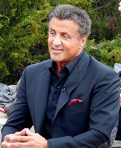

Сильве́стр Сталло́не-американський актор, режисер та сценаріст.Його друге ім'я деколи цитується як «Енціо», попри фільм про «Шлях до вершини Роккі», де його мати чітко назвала друге ім'я актора як «Гарденціо». Він досягнув успіху в численних бойовиках,особливо завдяки серіям стрічок "Роккі" та "Рембо"
Народився 6 липня 1946 року у районі Пекельна кухня, Мангеттена, Нью-Йорк. Повне ім'я — Майкл Сильв́ест Гарде́нціо Сталло́не (англ. Michael Sylvester Gardenzio Stallone), на його офіційному вебсайті зазначено як Сильв́ест Е́нціо Сталло́не англ. Sylvester Enzio Stallone.[4][5] Ще у ранньому дитинстві Сильвестр засвоїв перший урок життя: «Щоб вижити, треба бути сильнішим за інших». Його батько, Френк Сталлоне[en], перукар і косметолог, який у 1930-х роках емігрував із сицилійського міста Кастелламмаре-дель-Гольфо до США. Мати, Жаклін «Джекі» Лейбофіш, американський громадський діяч, астролог та актриса з сім'ї емігрантів, бретонця та української єврейки з Одеси. Під час пологів акушерці потрібно було використати дві пари щипців. Неправильне їх використання призвело до пошкодження нервових закінчень обличчя. Частину обличчя паралізувало — частина щоки, губ та язика. . Проте невиразна мова, усмішка та великі сумні очі стали в майбутньому візиткою Слая («Слай» — псевдонім Сильвестра). Коли хлопчику було 11, батьки розлучились. Слай був важкою дитиною — за 11 років навчання його виганяли з 14 шкіл, в основному через погану поведінку, хоча й оцінками він також не міг похвалитися. Сильвестр залишився, після розлучення з батьком, та згодом, коли йому виповнилося 15 років, переїхав до матері у Філадельфію, де почав навчатися у спеціальній школі для важких підлітків. Там він активно зайнявся спортом, ходив до тренажерного залу та зрідка брав участь у театральних виставах. Сам Слай згадує свою жахливу родину та дитинство, як фільм жахів. Коли почалася війна у В'єтнамі, мати влаштувала Сильвестра викладачем фізичної підготовки у привілейований коледж у Швейцарії, де він підробляв тренером та грав у студентському театрі. Після повернення до США у 1967—1969 роках навчався на драматичному факультеті Університету Маямі. Протягом навчання викладачі постійно запевняли, що у нього немає й дещиці таланту і актор з нього не вийде. Проте Слай разом зі своїм товаришем по кімнаті в гуртожитку Джоном Герцфельдом писав сюрреалістичні п'єски і ставив їх у підвалах і церквах Маямі, за що його й відрахували з університету. Після цього йому довелося виконувати різноманітну роботу: Слай був білетером, доглядачем у зоопарку, готував піцу. 1970 року, працюючи швейцаром у нью-йоркському театрі «Баронет», він все ще не відмовився від мрії стати актором, тому погодився виступити оголеним у позабродвейській авангардній п'єсі «Вдача». Потім дебютував у кіно роллю в порнофільмі «Вечірка у Кітті та Стада». Він отримував за знімання 100 доларів щоденно. Пізніше, коли актор став славетним, цю стрічку було повторно випущено на відео під назвою «Італійський жеребець» і вона зібрала непогані гроші. Під враженням побаченого на телебаченні 24 березня 1975 року боксерського поєдинку між нікому не відомим боксером Чаком Вепнером та славетним Мухамедом Алі — Сталлоне за три дні написав сценарій фільму «Роккі» і почав пропонувати його різним кіностудіям. Студія «United Artists» погодилася викупити цей сценарій за 315 тисяч доларів, але при умові, що головну роль виконуватиме Берт Рейнолдс або Пол Ньюмен. Сталлоне ж поставив умову, що в головній ролі з'явиться він сам. Нарешті погодилися на тому, що Сталлоне отримає 20 тисяч доларів за сценарій і 10 відсотків від майбутніх прибутків фільму. Слай не прогадав, бо стрічка заробила у прокаті 100 мільйонів доларів, тобто особисто він заробив 10 мільйонів. Ось так майже відразу він потрапив до вищої голлівудської ліги. Бо в розрахунок бралися не лише гроші, а й те, що стрічка була нагороджена трьома «Оскарами»: найкращий фільм року, найкраща режисура (Джон Авілдсен) та найкращий монтаж. Сталлоне мав дві номінації на «Оскара» — як найкращий актор та сценарист, але заповітні статуетки дісталися іншим. Найбільшу славу актору принесла серія фільмів «Рембо» про ветерана В'єтнаму Джона Рембо, який не може байдуже ставитися до довколишньої його несправедливості і перетворюється на самотнього месника, вправно використовуючи здобутий військовий досвід, власну силу та свої майже надлюдські здібності. Те ж саме можна сказати і про його «боксерську» серію «Роккі», коли герой Слая мобілізує сили для перемоги над черговими суперниками. Кінокритика постійно розносила чергові стрічки згаданих двох серіалів, але це не вплинуло на широку публіку, котра натовпами заповнювала кінотеатри. Сталлоне нині є одним з найбагатших людей шоу-бізнесу, бо гонорар за стрічку становив до 20 мільйонів доларів. Але він не дозволив собі захворіти «зоряною хворобою». Сталлоне залишається скромною людиною і взяв собі за правило вітатися з ліфтерами та іншим обслужним персоналом: «Я зберіг ментальність бідняка, бо боюся одного дня втратити все».